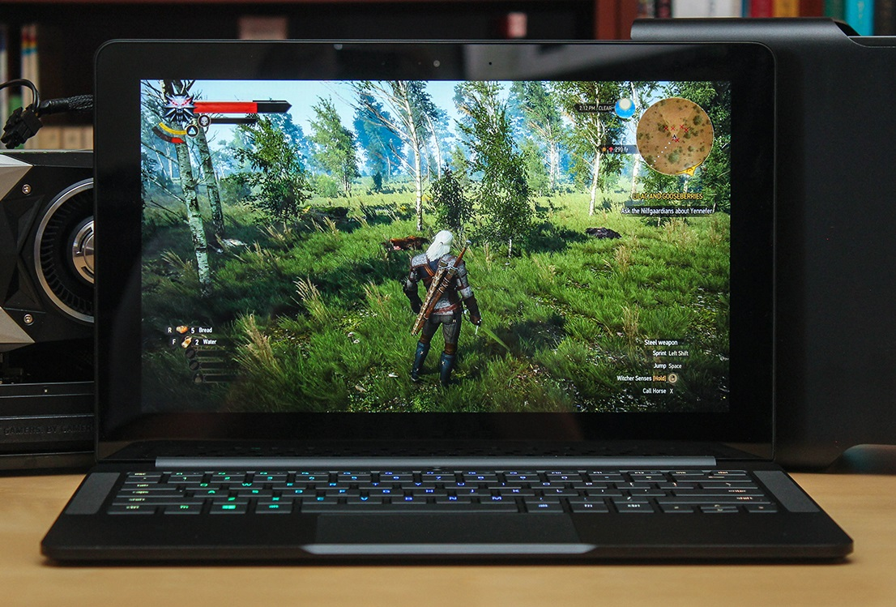
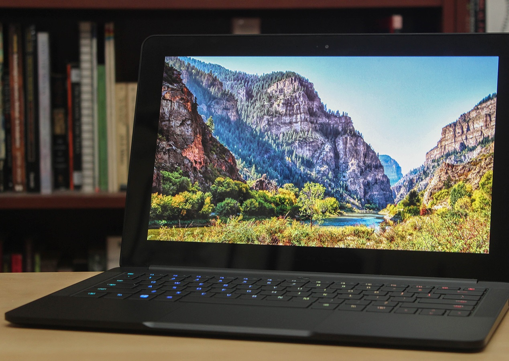
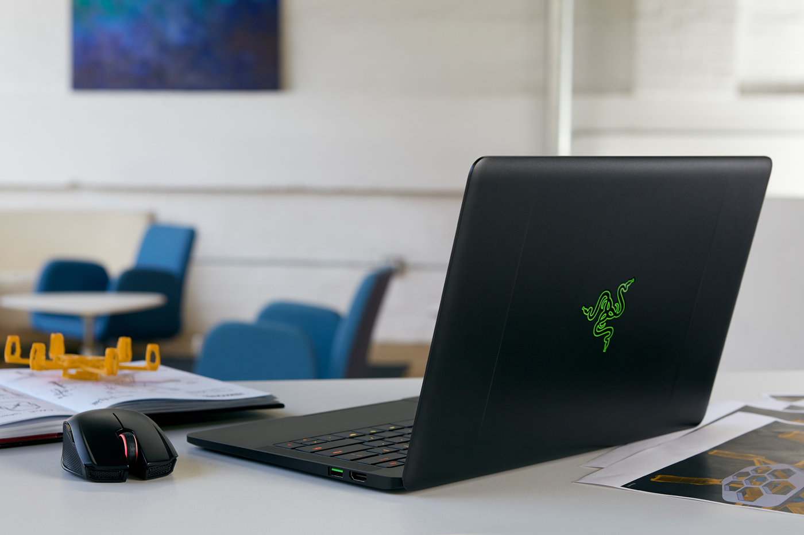

Razer's Blade Stealth and 'Core' add up to the gaming laptop I always wanted
Sean Buckley
I write for fancy websites, play a lot of Splatoon, pretend to make YouTube videos.
5 Comments500 Shares

Pros
Fast performance
More RAM than the last-gen model
Excellent touch display
Plays high-end games with external GPU dock
Cons
Disappointing battery life
No memory card reader
Summary
The Razer Blade Stealth is a good Ultrabook, maybe even a great one -- but middling battery life continues to hold it back from being the ultimate ultraportable laptop that Razer wants it to be.
Display: 12.5" IGZO 16:9 aspect ratio, with LED backlight, capacitive multi-touch, up to 170° wide viewing angles
Display Resolution: 4K (3840 x 2160)
Storage: 512GB SSD/1TB SSD
Processor: 7th Gen Intel® Core™ i7-7500U Dual-Core Processor with Hyper Threading 2.7GHz / 3.5GHz (Base/Turbo)
Graphics: Intel® HD Graphics 620
The Blade Stealth ticks every box it needs to in order to qualify as an ultraportable. It measures just a half-inch thick at its fattest point, with a silhouette that gently tapers toward the palm rest. Its weight is almost negligible; it'll add less than three pounds to your bag (2.84 pounds, to be precise). At 12.5 inches at its widest point, it won't take up much space either. It's solid and durable, too -- there's nothing like a CNC milled aluminum chassis to lend a device a high-end feel.
There isn't a lot of room for connectivity on the Blade Stealth's thin frame, but there's enough. Each of the laptop's sides houses a single USB 3.0 port, as well as an HDMI socket on the right, and a 3.5mm headphone jack and a Thunderbolt 3 connection on the left. Short of adding a built-in memory card reader, you can't expect too much more from an ultraportable. Still, that Thunderbolt 3 connector adds some versatility; Stealth users who buy the Razer Core GPU dock will gain four additional USB 3.0 ports.
Display and sound

Perhaps nothing better exemplifies Razer's attitude toward laptop design than the Blade Stealth's screen options. The laptop's 12.5-inch display can be had in two flavors: a 3,840 x 2,160 4K panel with a 100-percent Adobe RGB colorspace, or a 2,560 x 1,440 QHD screen with 70-percent RGB color gamut. Our review unit came with the latter, but both panels represent what seems to be the unspoken philosophy of Razer's design process: gorgeous at any expense. Both of these display options are indeed stunning, with vibrant colors, deep blacks and wide viewing angles -- but the cost is real. These beautiful screens bestow the laptop with the burden of short battery life.
I've consistently found nothing to complain about when it comes to the Razer Blade line's audio quality, and that's true of the new Stealth too. The laptop's stereo speakers live on either side of the keyboard and push out balanced sound with no noticeable distortion and minimal tinniness, but there's not much depth to the sound either. Razer recently bought THX, so the audio quality could one day improve, but for now these are merely good speakers. Not great, but good. And for laptop speakers, that's more than enough.
Performance
Razer calls the Blade Stealth the "ultimate Ultrabook," and as far as light, powerful laptops go, it fits the bill. I brought the Stealth with me when I covered Oculus' Connect 3 conference earlier this month, and it didn't let me down. For three days, the Stealth juggled multiple active browser windows with half a dozen open tabs apiece, a mess of disorganized Google Drive documents, multiple social media streams, video and image capture and editing tools and a handful of team messaging apps. Yes, my workflow is a complete disaster, which makes the Stealth's tolerance of it all the more impressive. The Intel Core i7-7500U CPU and 16GB of RAM shrugged off everything I threw at it.
BATTERY LIFE
Models
Times
Razer Blade Stealth (fall 2016)
5:36
Surface Book (Core i5, integrated graphics)
13:54 / 3:20 (tablet only)
HP Spectre x360 (13-inch, 2015)
11:34
Wrap-up

The Razer Blade Stealth initially caught my eye for its potential to fulfill a long-dormant dream: a portable, powerful laptop that could borrow the power of a desktop-class graphics card to transform into a gaming powerhouse. I've waited decades to realize this fantasy, and the Blade Stealth finally made it a reality... with some caveats. While the Stealth is indeed a powerful, thin and gorgeous laptop, its battery life keeps it from living up to Razer's claim of the "ultimate Ultrabook." The shadow of compromise hangs over the Core as well. At a high level, the GPU dock delivers on its promise, but today's technology simply can't siphon the full, unadulterated power of a desktop GPU through a single Thunderbolt 3 cable.
Still, I love the Razer Blade Stealth and Core combo. It's not the best ultraportable, and it won't make the most of your desktop graphics card -- but it's one of those products that "just works." For gamers without the patience to maintain a desktop but aren't willing to sacrifice size, weight and battery life for a full gaming laptop, it's worth all of the tradeoffs. Ultimately, the Razer Blade Stealth isn't for me, but the Stealth is nonetheless going to make a very specific niche of laptop-loving PC gamers very happy.